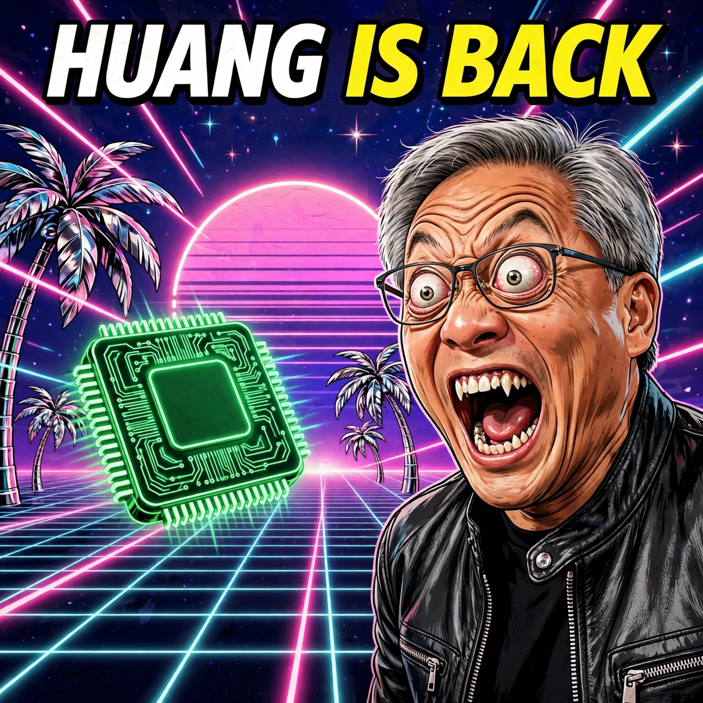

Morning Brief • Tuesday 80s Look
Huang Is Back

Nvidia's board unanimously reinstated Jensen Huang as president and CEO on Monday, Nov. 23, just 11 days after he resigned amid a scandal, and shares surged 31.5% — their best day since 2003 — adding roughly $950 billion in market value.
Read the full story →← Back to today's stories